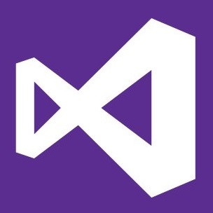

Development

I understand a wide range of languages including C, C#, Python and Typescript and understand essential web skills such as HTML, CSS and SQL. This website was created using Angular ASP.NET and hosted using Microsoft Azure App Services
I'm a team player both in and out of software projects and use Github and Slack to stay on top of work. I understand modern businesses use agile methodologies to continuously deliver in a team.
Programming for hardware is a fascinating topic I explore both in and out of academic studies and out and has led to me working with micro-processors and controllers such as the Arduino and the Kinetis K70 Tower.